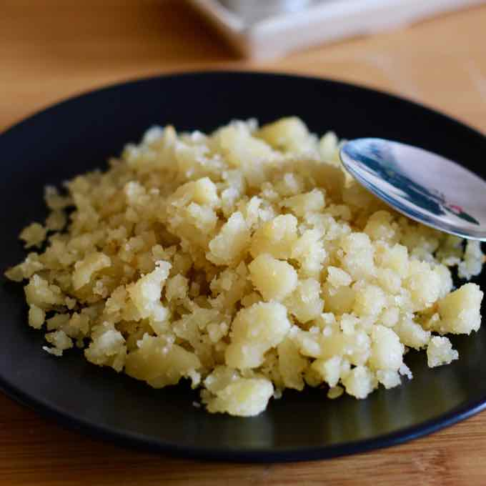

Homepage
Reviro

Description
It is a kneaded dough composed of flour, water and salt, sometimes supplemented with eggs.
Ingredients
- 1 kg of flour.
- Water.
- Salt.
- Oil.
- Wooden Spoon
Steps
- Place the flour in a bowl, add one tablespoon of salt and mix.
- Add water and mix with a spoon until the flour is slighty wet. It does NOT have to be a thin, unified dough.
- Heat a pot with a generous stream of oil.
- When the oil is very hot. Put the preparation in the pot. Left for about 5 minutes and then start stirring from the bottom up with a flat wooden spoon.
- Cover the pot, and after 5 minutes, uncover and stir again always from the bottom up.
- Step with the spoon as if giving small blows so that the largest pieces of dough shrink. Do this process a couple of times until you see that it begins to turn golden and have small pieces. Regulate the fire so you don't get burned.